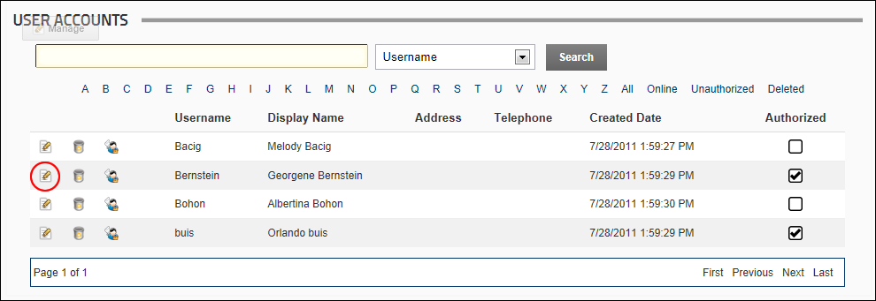
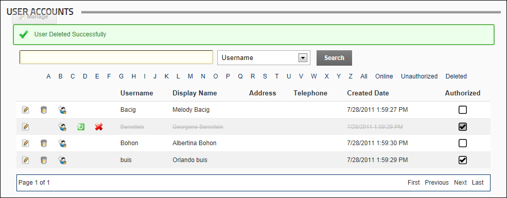

Deleting a User Account
How to "soft" delete a user account from a site using the User Accounts module. Information about this deleted account can still be viewed using this module.
- Navigate to Admin >
 User Accounts - OR - Go to a User Accounts module.
User Accounts - OR - Go to a User Accounts module.
- Find the user to be deleted using a filter or by searching.
- Click the Delete
 button beside their record. This displays the message "Are you sure you want to delete this user?"
button beside their record. This displays the message "Are you sure you want to delete this user?"

- Click the OK button to confirm.
